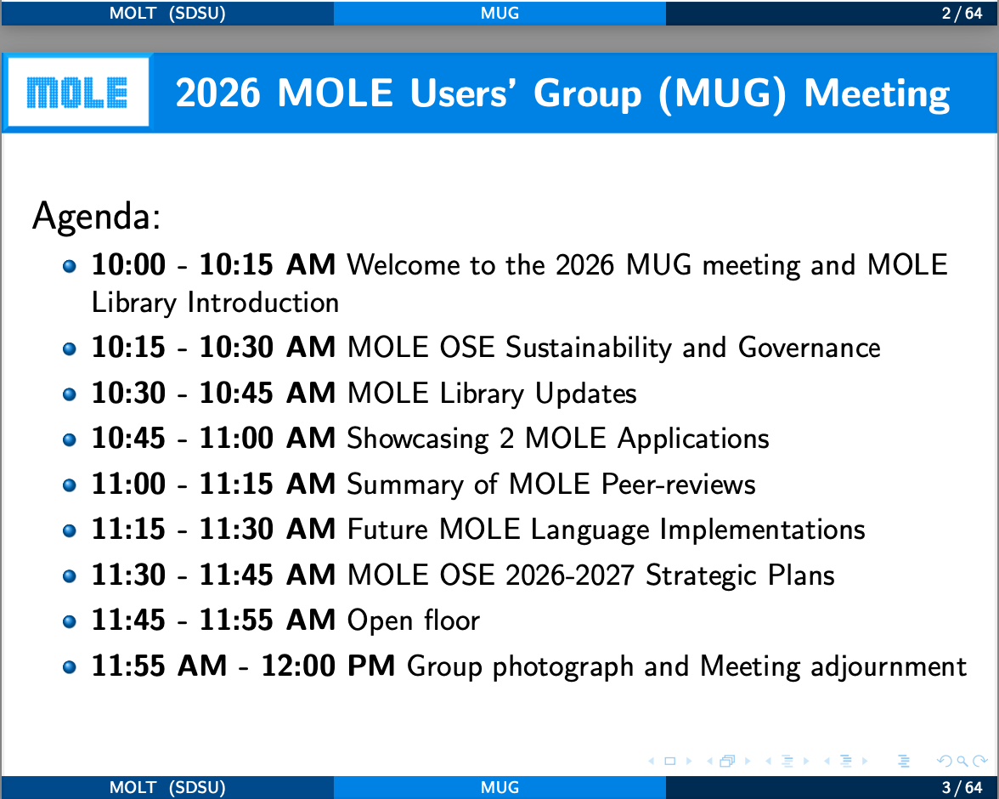
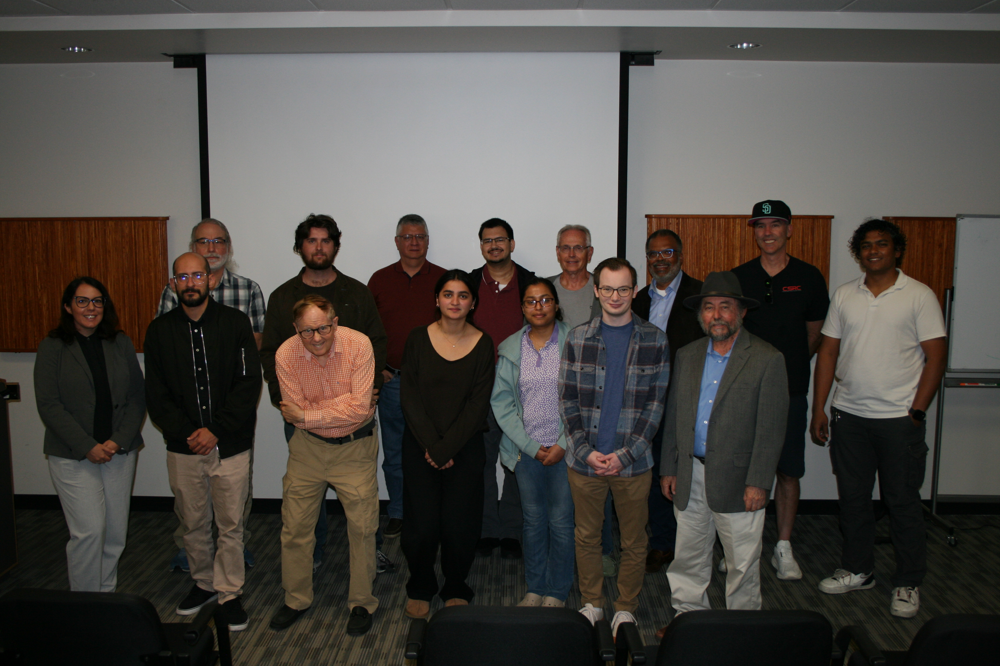
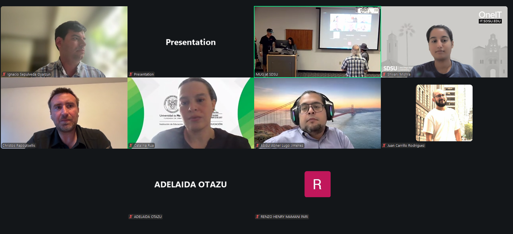
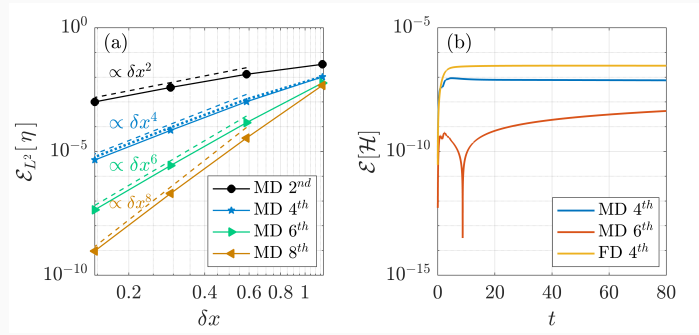

MUG 2026 Post-Meeting Materials
The first MOLE Users' Group Meeting (MUG) was held on April 30, 2026 at San Diego State University. The meeting was hybrid in person and online. We received 75 registrations from international participants, including MOLE users, developers, and members of the MOLE Leadership Team (MOLT). The meeting featured presentations from different members of the MOLT, as well as two showcased applications of the MOLE library: General Curvilinear Costal Ocean Model (GCCOM) by Dr. Jared Brzenski and Numerical Simulation of Nonlinear Weakly Dispersive Waves by Dr. Christos Papoutsellis. Scroll to the bottom of the page to see some photos from the in-person and online attendees, as well as snapshots from the two showcased applications.
Here are some materials from the 2026 MUG meeting:
(1) The slide deck from presentations by different members of the MOLE Leadership
Team (MOLT) can be obtained
here,
(2) For more details on the General Curvilinear Costal Ocean Model (GCCOM) application
showcased at the MUG meeting by Dr. Jared Brzenski, please visit
this page.
(3) The slide deck from the second showcased application of the MOLE library, Numerical
Simulation of Nonlinear Weakly Dispersive Waves by Dr. Christos Papoutsellis, can be
obtained
here.
Agenda
The Agenda For The MUG Meeting 2026

|
 |
 |
| In person attendees | A snapshot of some of the online attendees |

|
 |
| Showcased Application 1: Parallel GCCOM | Showcased Application 2: Nonlinear Weakly Dispersive Waves |